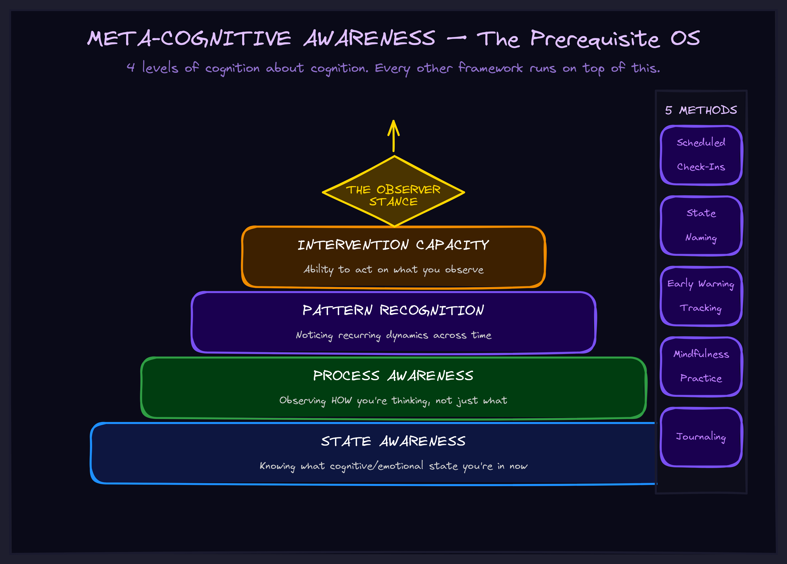

May 2026
The Skill That Makes Every Other Skill Work
Meta-cognitive awareness isn't a nice-to-have. It's the prerequisite your entire operating system depends on.

Two Hours Gone
I was deep in work. Hours passed. I looked up and realized I was exhausted, unfocused, and had been spinning without progress for the last two hours.
The signs had been there the whole time. Attention fragmenting. Internal pressure building. Reaching for distraction. No breakthroughs happening. But I didn't notice any of it. I was inside the work, not observing myself working.
That's the default state. You're in the experience with no outside view. And it costs you everything.
You can't change what you can't see. And most people can't see what's happening inside their own cognition.
The Observer Problem
Every high-performance framework — whether it's about managing energy, catching insights, staying in flow, or avoiding burnout — requires one thing before it can function: you have to notice what's happening inside.
Noticing heat building before you blow up. Noticing a creative click so you can capture it. Noticing when you're drifting so you can course-correct. Noticing when you're reaching for content that encodes a pattern you need.
All of these require the same underlying capacity. I call it meta-cognitive awareness — the ability to observe your own cognitive processes as they happen.
Without it, every framework you learn is inert. You know intellectually that you should "watch for burnout signals" or "capture insights when they hit." But if you can't actually observe yourself in real time, that knowledge sits on a shelf collecting dust.
What It Actually Is
Meta-cognitive awareness is cognition about cognition. Thinking about thinking. Specifically, it operates at four levels:
- State awareness. Knowing what cognitive and emotional state you're in right now. Heated? Flowing? Stuck? Reaching? Most people can't answer this question at any given moment.
- Process awareness. Observing how you're thinking, not just what you're thinking about. Are you grinding linearly? Jumping between topics? Generating creatively? Defending a position reflexively?
- Pattern recognition. Noticing recurring dynamics. "I always drift at this point." "I always white-screen after three hours of deep focus." "I always reach for YouTube when the problem exceeds my working memory."
- Intervention capacity. Being able to act on what you observe. Detecting heat and invoking cooling. Catching drift and re-engaging mission. Seeing the reach and deciding to stack analogies instead of feeling guilty.
The "meta" is the step back — from being in the state to observing the state. It's the difference between drowning and watching yourself swim.
Why Every Framework Breaks Without It
Think about any system for managing yourself or your work. Each one depends on noticing something specific:
- Energy management requires noticing energy levels before they hit zero.
- Flow states require noticing when you're in flow — and when you've fallen out.
- Insight capture requires noticing the moment an insight occurs.
- Burnout prevention requires noticing heat accumulating before it crosses the threshold.
- Strategic thinking requires noticing when you're reaching for adjacent patterns.
- Decision quality requires noticing which type of conviction you're feeling — real signal or anxiety relief.
The common thread is brutal: if you can't observe your internal states, none of these systems work. You'll have the knowledge. You'll have the frameworks. You'll have the vocabulary. But you'll be inside the experience with no outside view, and the frameworks will fire exactly never.
Meta-cognitive awareness isn't one framework among many. It's the operating system that every other framework runs on.
The Observer Stance
The key capacity is what I call the observer stance. It's not dissociation — you're not disconnecting from experience. It's dual-track operation:
- You still feel the heat, the flow, the frustration, the click.
- But simultaneously, a parallel process is watching. "Ah, this is heat building. Level three. Attention starting to fragment."
It's experiencing and observing the experience at the same time. Like being in a conversation while also noticing the dynamics of the conversation. You're a participant and a witness simultaneously.
This isn't mystical. It's trainable. It's a skill that gets stronger with practice, and it can be installed as a habit.
How to Develop It
Five methods, ranked by impact per minute invested:
1. Scheduled Check-Ins
Every 10-15 minutes, pause. Ask yourself three questions:
- "What's my state right now?" — Energy level, focus quality, emotional temperature.
- "What am I doing?" — On task? Drifting? Reaching?
- "What do I notice?" — Any early warning signs? Any clicks? Any patterns?
It takes thirty seconds. The ROI is enormous. You're forcing the meta-view regardless of absorption. Over time, the scheduled check becomes habitual, then automatic. The schedule is scaffolding for what eventually becomes natural.
2. State Naming
Develop vocabulary for your states. "Heated." "Flowing." "Reaching." "Grinding." "Drifting." Names create categories. Categories enable recognition. Recognition enables intervention.
"I feel bad" is useless. "I'm at thermal level four with fragmenting attention" is actionable. Vocabulary is precision, and precision is power.
3. Early Warning Tracking
Learn what precedes your state transitions. Before you white-screen, what happens? Before you enter flow, what conditions are present? Before you drift, what triggers it?
Your early warning signs are personal. Learn them, and you can predict transitions before they complete. Prediction enables prevention.
4. Mindfulness Practice
Five minutes a day. Sit quietly. Observe thoughts and sensations without judgment. Notice when you've been absorbed and return to observing. That's it.
This isn't spiritual — it's cognitive training. The practice on the cushion transfers to practice off the cushion. The observer muscle gets stronger whether you're meditating or architecting.
5. Journaling
Writing about your cognitive experience builds the observer perspective by forcing externalization. You can't journal "what happened in my head today" without developing the habit of watching what happens in your head.
What This Looks Like in Practice
Without meta-cognitive awareness: You're working. Hours pass. Suddenly you're white-screened — exhausted, unfocused, done. "What happened?" No idea. It just hit you.
With meta-cognitive awareness: You're working. Thirty minutes in, scheduled check-in fires. Observer notices: heat level three, attention starting to fragment, early warning signs active. Intervention: ten-minute break, then structural cooling. White-screen avoided. Work continues sustainably.
The same signs were present in both cases. The difference is whether anyone was watching.
For Executives
This scales beyond personal practice. If you run a team, consider:
Your best people burn out in silence because they're inside the experience with no observer stance. They don't notice heat building until they've already crossed the threshold. Meta-cognitive awareness training isn't wellness theater — it's operational infrastructure.
Your decision quality is a function of state awareness. Decisions made at thermal level five — under pressure, with fragmented attention — are structurally different from decisions made at level two. If your team can't observe their own states, they can't flag when they're making decisions from a compromised position.
AI can't develop this for you. AI can process what you observe. It can track patterns you've noticed. It can remind you to check in. But the observation itself — the felt sense of "I'm heated right now" or "this click feels like relief, not insight" — that's irreducibly human. The combination is powerful: human meta-cognition feeding AI pattern processing. But the human side has to exist first.
Meta-cognitive awareness is the one skill that makes every other skill work. Without it, your framework collection is a library nobody reads.
What Comes Next
Meta-cognitive awareness is the foundation. On top of it, you can build systems for managing energy, capturing insights, entering flow, and making better decisions under pressure. That's the stack we teach — not as theory, but as installable cognitive infrastructure.
Explore the frameworks to see how the pieces fit together. Or if you're building something complex and want to see how meta-cognitive awareness maps to AI-augmented decision making — let's talk about it.